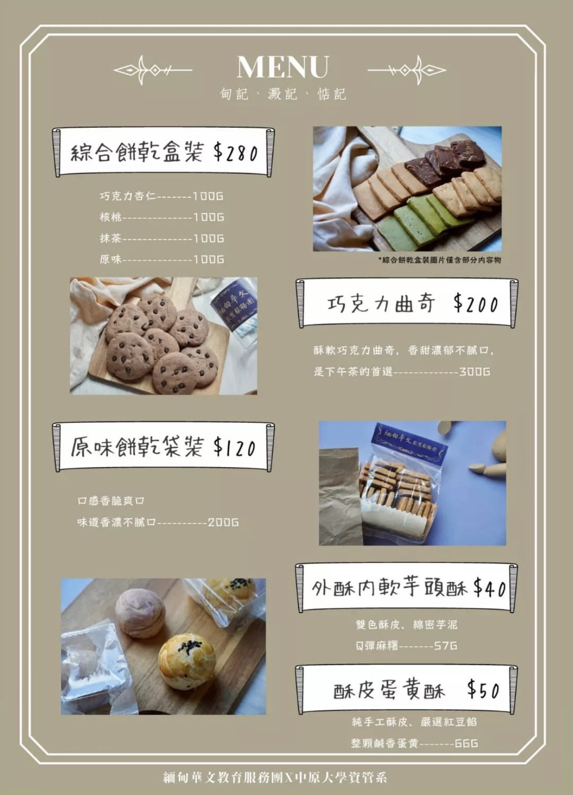

活動經驗

與緬甸華文教育服務團合作販賣手工餅乾，透過小組模擬真實企業實體宣傳銷售，自行與合作單位接洽，學習如何幫品牌找到賣點與宣傳影片的拍攝定位等，在學習的同時做公益，幫助緬甸的孩童，讓他們有更多的學習資源，也讓我們更珍惜現在所擁有的。

我們自行找了桃園市新屋區蚵間海岸巡護隊的淨灘活動參加，也與主辦單位進行了訪談，在這過程中，發現人們對海洋製造的負擔光是淨灘已經遠遠無法彌補，需要從源頭減少垃圾產生，也學到了許多關於淨灘的相關知識，希望大家身為地球村的一份子，都能為地球盡一份心力。
SKILL
Python 80%
Java 70%
html 65%
CSS 50%
成長階段

快樂的童年生活!!
與同學們朝夕相處，經歷了大大小小的活動，留下了美好的回憶。
在同一所學校待了六年，一切生活熟悉中帶些新奇，留下了更多不同的回憶。
大學生活持續在進行中，許多沒嘗試過的事情等著我去探索!